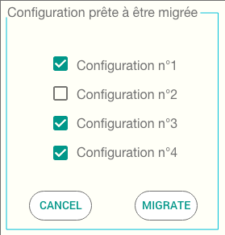

<div class="global animated fadeIn">
    <div class="center bg-dark">
      <h2>Outil de migration</h2>
      
      <p>Afin de faciliter la transition vers la nouvelle version du logiciel BCI CONNECT, 
        il m'a été demandé de développer une application permettant la migration complète 
        de la configuration existante présente dans l'ancienne version du logiciel BCI LINK.</p>

      <p>Pour ce faire, j'ai développé l'application en JAVA classique en utilisant la bibliothèque Swing.</p>
        
      <p>L'utilisateur devra avoir d'installer sur sa machine les deux versions du Logiciel BCI, 
        dès le lancement de l'application celle-ci répertorie l'ensemble de la configuration présente 
        dans l'ancienne version du logiciel BCI LINK comme présenté sur l'image de démonstration (l'ensemble 
        des configurations seront sélectionnées par défaut).</p>

        
      <p>Dès lors que l'utilisateur aura sélectionné ou non certaines configurations il devra cliquer sur 
        le bouton "Migrate" pour enclencher le processus de migration.</p>

        <p>Ainsi l'utilisateur retrouvera l'ensemble de sa configuration sur la nouvelle version du logiciel BCI CONNECT.</p>

        <p class="lowerDescription">Image non contractuelle, maquette créé sous Adobe XD pour illustrer ma réalisation.</p>
        
      <div class="comp">
        <h3>Compétences utilisées:</h3>
        <dl>
        <dd><a routerLink="/devAppJava">Développement JAVA</a></dd>
        <dd><a routerLink="/UIUX">UI/UX Design</a></dd>
        <dd><a routerLink="/gestionProjet">Gestion de projet</a></dd>
        <dd><a routerLink="/autonomie">Autonome</a></dd>
        <dd><a routerLink="/forcePropo">Force de proposition</a></dd>
        <dd><a routerLink="/communication">Communication</a></dd>
        </dl>
      </div>
    </div>
  </div>